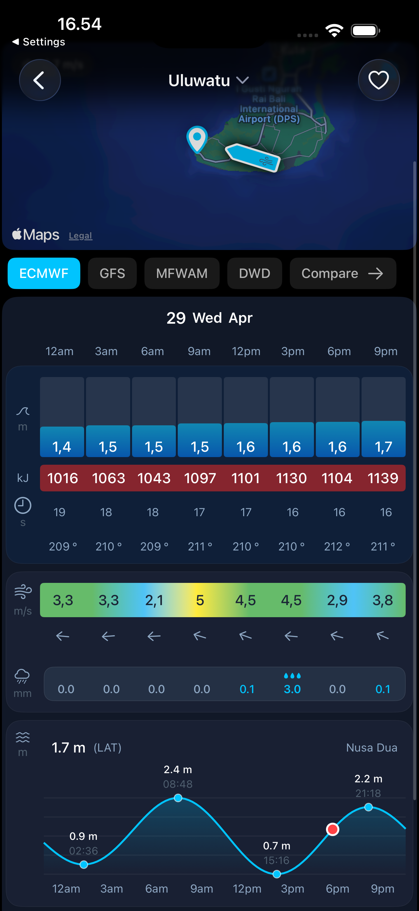
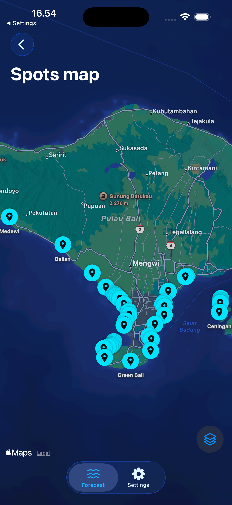
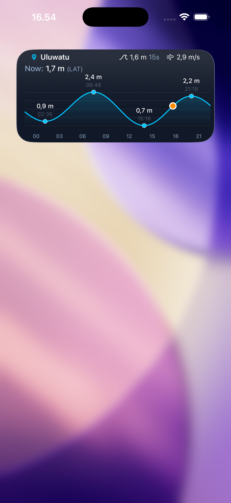
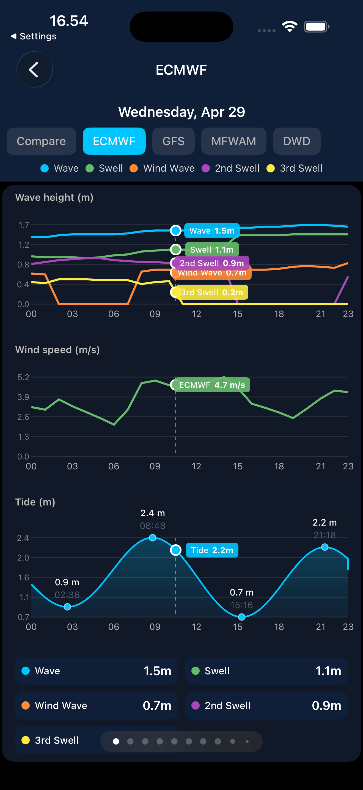

Surfcast turns raw marine data into a forecast you can actually read. Four global wave models, live tide and swell, and your favourite spots — all in one calm, fast app.

No clutter, no guesswork. Just the numbers that matter, drawn clearly enough to read at a glance from the car park.
Pan the coast and see swell at a glance. Tap any pin to jump straight into its forecast — from world-class points to your secret beachie.

Height, period, direction, swell energy in kilojoules, wind arrows and a full tide curve — every variable a surfer reads, in one scroll.
A home-screen widget keeps your home break one glance away — current height, period, wind and the day's tide curve, refreshed automatically.

Every model tells a slightly different story. Surfcast overlays ECMWF, GFS, MFWAM and DWD on the same chart, so you can spot consensus — and back yourself when they disagree.

Beyond height — see the real power behind a swell, graded from calm to double-overhead.
Direction and speed shown as clear arrows for every hour, so offshore is obvious.
Plan the week ahead. Scan day by day and catch the swell before everyone else.
A calm dark interface and big, legible numbers you can read in bright sun.
Forecasts refresh through the day, drawn straight from the marine models you trust.
From Uluwatu to your home beachie — search any coast, anywhere you chase waves.
Download Surfcast free and read the ocean before you even wax up.